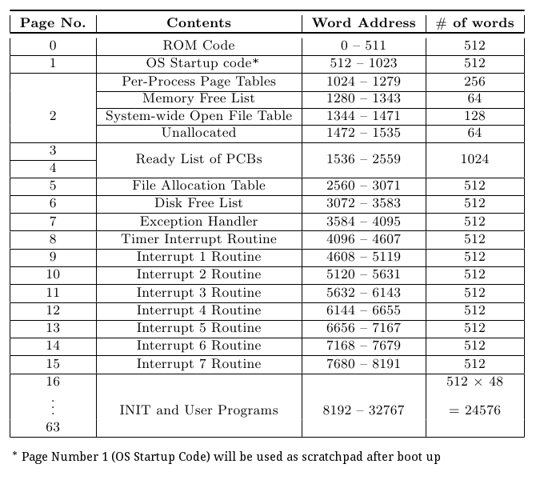
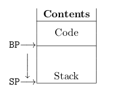

Introduction
XOS (Experimental Operating System) is an experimental operating system which is designed to be run on the XSM (Experimental String Machine) architecture which is a simulated machine hardware. XOS is intended as an instructional tool to help students learn various aspects about operating systems.
XOS is programmed using a custom language, SPL (System Programmer's Language) which compiles to XSM compatible code. (Refer SPL Specification) Application programs for XSM are written in APL (Application Programmer's Language). (Refer APL Specification)
The programs, data and operating system code is stored on a disk which has an XFS (Experimental File System) in it. (Refer XFS Specification)
The various functionalities of XOS include
- Process Management, includes scheduling and dispatching processes to the CPU. XOS is capable of \textit{multiprogramming} (the ability to run more than one process simultaneously). (Refer Process Management)
- Memory Management, involves allocating memory for processes, demand paging (loading memory pages from the disk as and when required). (Refer Memory Management)
- System Calls. XOS provides various system calls for the user processes to execute certain kernel level operations. (Refer System Calls )
Memory Organization
The operating system organizes memory as given below

Process Management
Introduction
Any program in its execution is called a process. Processes will be loaded into memory before they start their execution. Each process occupies at most 4 pages in of the memory. The processor generates logical addresses with respect to a process during execution, which is translated to the physical address. This translation is done by the machine using page tables, Refer Address Translation (XSM Specification)
The XSM architecture supports demand paging and so the machine does not fix the number of processes that can be run on it. However XOS has limited the number of process running simultaneously to 32, due to limitations in number of PCBs in the Ready List and the number of Per-Process Page Tables.
Process Structure
A process in the memory has the following structure.
- Code Area : These are pages of the memory that contain the executable code loaded from the disk.
- Stack : This is the user stack used for program execution. The variables and data used during execution of program is stored in the stack. It grows in the direction of increasing word address. The location of the stack is fixed at the 4th page of the process.
The structure of a process is as shown

Process Control Block (PCB)
It contains data pertaining to the current state of the process. The size of the PCB is 32 words.
Structure of a PCB is given below
| 0 | 1 | 2 | 3 | 4 | 5 | 6 | 7-14 | 15-30 | 31 |
|---|
| PID | STATE | BP | SP | IP | PTBR | PTLR | R0 - R7 | Per-Process
Open File Table | ...Free... |
Process Identifier (PID)
The process identifier is a number from 0 to 31, which identifies the processes in memory. The PID of the current process can be calculated from the PTBR register.
Process State (STATE)
The process state corresponding to a process, indicated by STATE in the PCB stores the state of that process in the memory. A process can be in one of the following states.
- 0 for terminated, i.e. process has completed execution
- 1 for ready, i.e. process is waiting for the CPU to start execution.
- 2 for running, i.e. the process is currently running in the CPU
Registers
- IP: The word address of the currently executing instruction is stored in the IP (Instruction Pointer) register. The value of this instruction cannot be changed explicitly by any instruction.
- BP: The base address of the user stack is stored in the BP (Base Pointer)register.
- SP: The address of the stack top is stored in the SP (Stack Pointer)
- PTBR: The physical address of the Per-Process Page Table of the process is stored in the PTBR (Page Table Base Register).
- PTLR: The length of the Per-Process Page Table (No. of entries) is stored in the PTLR (Page Table Length Register). It is fixed as 4 for every process in XOS.
Each process has its own set of values for the various registers. Words 7 – 14 in
the PCB stores the values of the program registers associated with the process .
Per-Process Open File Table
The Per-Process Open File Table contains details of files opened by the corresponding process. Every entry in this table occupies 2 words. A maximum of 8 files can be opened by a process at a time, i.e. up to 8 entries in the PCB. It is stored in the PCB from words 15 to 30. Its structure is given below
| Pointer to system-wide open file table entry | LSEEK position |
For an invalid entry, the value of pointer to system wide open file table is set to -1.
- The OS maintains a system wide open file table which contains details of all the files that are opened by processes (Refer System Wide Open File Table). The entry in the Per-Process File Table points to the System-wide Open File Table entry corresponding to the file.
-
It also stores the LSEEK position for the file, which indicates the word in
the file to which the process currently points to for read/write operations.
Ready List
The list of PCBs stored in the memory is used as a Ready List by the operating system to schedule processes to CPU. The STATE in the PCB indicates whether a process is ready for execution or not. A new process in memory is scheduled for execution by circularly traversing through the list of PCBs stored in memory and selecting the first Ready process after the PCB of the currently running process in the list.
A maximum of 32 PCBs can be stored in the memory, and hence the maximum number of processes that can be run simultaneously is limited to 32. The PCB list is stored in pages 3 and 4 in the memory (words 1536 – 2559)
The Per-Process Page Tables
Every process in XOS has a Per-Process Page Table. A total of 32 PCBs and 32 Page Tables in total are available, which limits the number of processes that can be run to 32.
| Physical Page Number | Auxiliary Information |
The Per-Process Page Table stores the physical page number corresponding to each logical page associated with the process. The logical page number can vary from 0 to 3 for each process. Therefore, each process has 4 entries in the page table. Per-Process Page Tables are stored in Page 2, words 1024 – 1279 in the memory ( 256 words = 32 processes × 4 entries )
When a process is loaded, only the disk addresses of the program are stored initially. The actual pages are not loaded into memory. In demand paging, the actual pages are loaded only when the pages are accessed for the first time (Refer Paging and Virtual Memory). Once all pages are loaded, each entry contains the page number where the data specified by the logical address resides in the memory and auxiliary information which includes reference bit etc, valid/invalid bit, .
Eg :
| Physical Page Number | Auxiliary information
(referenced and valid bit) |
| 36 | 01 |
| 311 | 00 |
| 54 | 01 |
| 490 | 00 |
In the above example :
- Reference bit of every entry is set as 0, indicating unreferenced
- The 1st entry is a valid page in memory as the valid bit is 1.
- The 2nd entry is invalid (valid bit is 0) and the disk block no corresponding to that entry is stored (311).
- The 3rd entry is also a valid page (valid bit is 1).
- The 4th entry is invalid and the disk block no stored is 490. This corresponds to a page in the swap area.
Multiprogramming
The operating system allows multiple processes to be run on the machine and manages the system resources among these processes. This process of simultaneous execution of multiple processes is known as multiprogramming.
To support multiprogramming in the system, the kernel makes use of the scheduler which is present in the Timer Interrupt Service Routine in Page 8 of the memory.
INIT and other user programs
The INIT process is the first user program that is loaded by the OS after start up. The INIT and other user processes uses the memory pages 16 - 63 for execution (Code Area and Stack).
Memory Management
Introduction
XSM uses a paging mechanism for address translation (Refer Address Translation in XSM Specification ). XOS supports virtual memory, i.e. it supports execution of processes that are not completely in memory. It follows pure demand paging strategy for memory management. Pages are allocated as and when required during execution.
Paging
Paging is the memory management scheme that permits the physical address space of a process to be non-contiguous. Each process has its own page table (Refer The Per-Process Page Tables), which is used for paging.
The Per-Process Page Table contains information relating to the actual location in the memory. Each valid entry of a page table contains the page number in the memory where the data specified by the logical address resides. The address of Page Table of the currently executing process is stored in PTBR and length of the page table is set to 4 in PTLR of the machine.
The structure of an entry in the page table is given below.
| Physical Page Number | Auxiliary Information |
- Physical Page Number: The logical page numbers generated by the CPU for a process can be in the range 0 to 3. The actual location of these logical pages are given by the physical page number. Address translation is done by the machine (Refer Address Translation in XSM Specification )
- Auxiliary Information:: The 2nd word for the entry contains auxiliary information, which are a sequence of flags. The structure of auxiliary information is given below

- Reference Bit (R): This bit is set to 1 by the machine every time a page is accessed. This bit is used for page replacement by the OS
- Valid/Invalid Bit (I) is a value 1 or 0 for valid and invalid respectively. It is valid if and only if the entry is a physical memory location. It is invalid if either the entry points to location on the disk or if its not in the logical address space of the process.
Memory Free List
The free list of the memory consists of 64 entries. Each entry is of size one word. Thus, the total size of the free list is thus 64 words. It is present in words 1280 to 1343 in memory. (words 256 to 319 of Page ) of the memory. Each entry of the free list contains a value of either 0 or 1 indicating whether the corresponding page in the memory is free or not respectively.
Virtual Memory
XOS allows virtual memory management, i.e. running processes without having all the pages in memory. It makes use of a backing store or swap in the disk to replace pages from the memory and allocate the emptied memory to another process. This increases the total number of processes that can be run simultaneously on the OS.
Before XOS starts executing a process, its page tables are set with disk block numbers i.e initially no pages are allocated to the process. For each page table entry, the flags are set as 0 (invalid) and 0 (unreferenced). When a page is referenced for the first time, it triggers a page fault exception (since valid bit is set as 0). The Exception Handler Routine is responsible for loading the required page from the disk to the memory. This strategy of loading pages when accessed for the first time, is known as Pure Demand Paging.
On encountering a page fault exception, the Exception Handler Routine loads the required page from the disk to a free page in the memory. If no free page is available in the memory, a page replacement technique is used to select a victim page. The page replacement technique used in XOS is a second chance algorithm (Refer Silberschatz, Galvin, Gagne: Operating System Concepts) which uses the reference bits in the auxiliary information. The victim page is swapped out to to the disk (swap area) to accommodate the required page.
Files
The operating system requires accessing the file system (XFS) while loading programs, and reading data from the files. The operating system maintains a memory copy of the file system data structures like FAT(File Allocation Table) and Disk Free List. It is loaded from the disk to the memory during operating system boot.
Apart from the file system data structures XOS maintains details about files opened by all processes in the System-wide Open File Table. XOS uses a scratchpad to access files in the memory which will be explained further in this chapter.
File Allocation Table
File allocation table (FAT) is a table that has an entry for each file present in the disk. FAT is stored in disk block 10 in the XFS disk. FAT is loaded into page number 5 of the memory when the OS starts.
The structure of FAT entry is given below
| 0 | 1 | 2 | 3 - 7 |
|---|
| File Name | File Size | Block# of Basic Block | ...Unused... |
Disk Free List
The Disk Free List is a data structure used for keeping track of unused blocks in the disk. The memory copy of Disk Free List is stored in the page number 6. It is stored in block number 11 in the disk.
System-Wide Open File Table
This data structure maintains details about all open files in the system. It is located from words 1344 to 1471 of the memory (in Page 2). System Wide Open File Table consists of a maximum of 64 entries. Therefore, there can be at most 64 open files in the system at any time. Each entry of the System Wide Open File Table occupies 2 words.
| FAT Index | File Open Count |
- FAT index : It stores the index of the corresponding file in the FAT. An invalid entry is denoted by -1.
- File Open Count : File Open Count is the number of open instances of the file. When this becomes zero, the entry for the file is invalidated in the System Wide Open File Table.
The Per-Process Open File Table in the PCB of each process stores information about files opened by the corresponding process. Each entry in the Per-Process Open File Table has the index to the file’s entry in the System-wide Open File Table.
Scratchpad
There is a specific page of the memory which is reserved to store temporary data. This page is known as the Scratchpad. The scratchpad is required since any block of the disk cannot be accessed directly by a process. It has to be present in the memory for access. Hence, any disk block that has to be read or written into is first brought into the scratchpad. It is then read or modified and written back into the disk.
The page number 1 of the memory is used as the scratchpad. Once the OS has booted up there is no need for the OS startup code. So this page can be reused as the scratchpad.
System Calls
Introduction
System calls are interfaces through which a process communicates with the OS. Each system call has a unique name associated with it (Halt, Open, Read, Fork etc). Each of these names maps to a unique system call number. Each system call in turn causes a software interrupt to occur. Note that multiple system calls can be mapped to the same interrupt.
All the arguments to the system call are pushed into the user stack of the process which invokes the system call. The system call number is pushed as the last argument. (Refer APL Specification)
Machine System Calls
Halt
APL Syntax : halt()
System Call No. : 0
The Halt system call is used to halt the machine. This system call works only when there is one process running. Halt system call invokes the interrupt INT 7.
File System Calls
File system calls are used by a process when it has to create, delete or manipulate Data files that reside on the disk(file system). There are seven file system calls. An interrupt is associated with each system call. All the necessary arguments for a system call are available in the user stack with the system call number as the last argument.
Create
APL Syntax : int Create(fileName)
System Call No. : 1
This system call is used to create a new file in the file system whose name is specified in the argument. The return value of the Create() system call is 0 if it is a success, and -1 otherwise. If the file already exists, the system call returns 0 (success). It invokes Interrupt 1 Routine.
Delete
APL Syntax : int Delete(fileName)
System Call No. : 2
This system call is used to delete the file from the file system whose name is specified in the argument. The return value of the Delete() system call is 0 if it is a success, and -1 otherwise. It invokes Interrupt 1 Routine.
Open
APL Syntax : int Open(fileName)
System Call No. : 3
This system call is used to open an existing file whose name is specified in the argument. It calls Interrupt 2 Routine. The return value of the Open() system call is an integer value called FileDescriptor, which is the index of the corresponding file’s entry in the Per-Process Open File Table.
Close
APL Syntax : int Close(fileDescriptor)
System Call No. : 4
This system call is used to close an open file. The file can only be closed by the process which opened it. fileDescriptor is an integer value returned by the corresponding Open() system call. The return value of the Close() system call is 0 if it is a success, and -1 otherwise. It invokes Interrupt 2 Routine.
Seek
APL Syntax : int Seek(fileDescriptor, newLseek)
System Call No. : 5
This system call is used to change the current value of the seek position in the per-process open file table entry of a file to the newLseek value. The return value of the Seek() system call is 0 if it is a success, and -1 otherwise. It invokes Interrupt 3 Routine.
Read
APL Syntax : int Read(fileDescriptor, destVariable)
System Call No. : 6
This system call is used to read one word at the current seek position, from an open file ( identified by fileDescriptor ) and store the word to a string/integer variable ( identified by destVariable ). The return value of the Read() system call is 0 if it is a success or -1 otherwise. It invokes Interrupt 3 Routine.
Write
APL Syntax : int Write(fileDescriptor, sourceVariable)
System Call No. : 7
This system call is used to write one word at the current seek position, into an open file ( identified by fileDescriptor ) from a string/integer variable ( identified by sourceVariable ). The return value of the Write() system call is 0 if it is a success or -1 otherwise. It invokes Interrupt 4 Routine.
Process System Calls
Process system calls are used by a process when it has to duplicate itself, execute a new process in its place or when it has to terminate itself. There are three process system calls. An interrupt is associated with each system call. All the necessary arguments for a system call are available in the user stack with the system call number as the last argument.
Fork
APL Syntax : int Fork()
System Call No. : 8
This system call is used to replicate the process which invoked this system call in the memory. The new process which is created is known as the child and the process which invoked this system call is known as its parent. The return value of the Fork() system call to the parent process is the PID (process identifier) of the child process.It invokes Interrupt 5 Routine
Exec
APL Syntax : int Exec(filename)
System Call No. : 9
This system call is used to load the program, whose name is specified in the argument, in the memory space of the current process and start its execution. The return value of the Exec() system call is 1 if it is a success, and 0 otherwise. It invokes Interrupt 6 Routine.
Exit
APL Syntax : Exit()
System Call No. : 10
This system call is used to terminate the execution of the process which invoked it and removes it from the memory . It loads the next available process. When there is only one process running, it halts the machine. It invokes Interrupt 7 Routine.
System Routines
The Operating System apart from its various data structures and interfaces it provides to the user processes, has certain routines to execute while start up and during interrupts. These routines are included as the Operating System Routines.
OS Startup Code
The OS Startup Code resides in the page 1 in the memory. When the machine boots up, the ROM Code loads the OS Startup Code from block 0 in the disk to page 1 in the memory. The OS Startup code initializes all data structures required for the OS, loads the FAT and Disk Free List from file system into the memory and starts execution of the INIT process.
Exception Handler
When the machine encounters an exception it sets EFR (Exception Flag Register) with details corresponding to the exception and calls the exception handler routine (Page No. 7 in memory). (Refer Exceptions in XSM)

XOS handles all exceptions other than Page Fault by killing the process
which caused the exception.
Page Fault Exceptions
The Cause field of EFR for Page Fault Exceptions is 0. Once a page fault occurs, the Exception Handler Routine loads the required page from the disk to the memory. The corresponding entry for the logical page which caused the exception to occur (indicated by BadVAddr field in EFR ) will be invalid in the page table of the process.
Timer Interrupt Routine
The Timer Interrupt Routine is responsible for context switch, i.e. storing the state (values of the registers) of the currently executing process to the PCB, and setting the registers with values from the PCB of the next ready process in the Ready List of PCBs. A scheduler is responsible for selecting a ready process from this list. The Scheduler code is also contained in the Timer Interrupt Routine. The Timer Interrupt routine resides in page 8 of the memory.
Interrupt Routines
The Interrupts from 1 to 7 are invoked by the user processes through system calls. Each interrupt routine has code corresponding to one or more system calls. Interrupt routines for interrupts 1 to 7 reside in memoery locations 9 to 15. Refer System Calls.